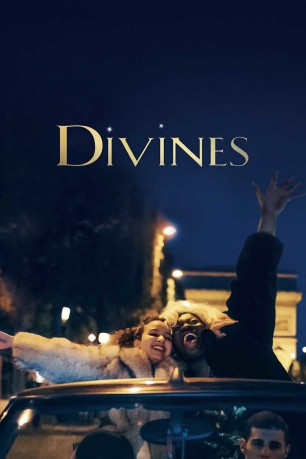

IMDB-Wertung: 7.5 / 10
IMDB-Wertung: 7.5 / 10  Tomatometer: 83
Tomatometer: 83  Metascore:
Metascore: 
A streets teenager from dysfunctional family from a banlieue (HLMs) in Paris comes across a young dancer who turns her life upside down.
WEBHDRIP DUBBED
 IMDB-Wertung: 7.5 / 10 Tomatometer: 83 Metascore:
A streets teenager from dysfunctional family from a banlieue (HLMs) in Paris comes across a young dancer who turns her life upside down.
WEBHDRIP DUBBED
Jahr: 2016
Dauer: 106 Minuten
FSK:
Land: Frankreich Studio: Diaphana FilmsTonspuren:
Untertitel:
Auflösung: 1080p (1920x808) Größe: 3645 MB
Regisseur: Houda Benyamina
Drehbuch: Wade Davis
Soundtrack:
Darsteller:
Datei: X:\2016(A-F)\Divines (2016, FSK, 1920x808).mkv seit 23.11.2016
Festplatte: HD 2016(A-Z)
 Es gibt insgesamt 147 Filme in der Gruppe '2016(A-F)'
Es gibt insgesamt 147 Filme in der Gruppe '2016(A-F)'